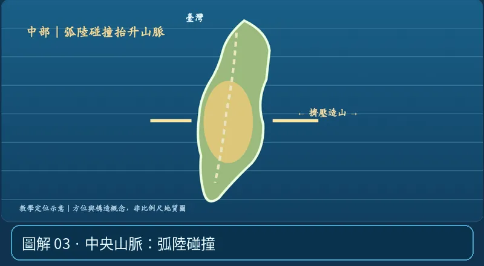

第 06 單元｜圖解 3/6｜課本 p.89–92（總測 p.93–99）
中央山脈：弧陸碰撞
菲律賓海板塊上的呂宋火山島弧與歐亞大陸邊緣持續碰撞擠壓，抬升形成臺灣山脈。花東縱谷是重要板塊縫合帶區域。
① 看一眼② 操作圖③ 自己推理④ 揭開解答
🔬 這張圖，請自己動手試
操作圖上方的頁籤、滑桿或按鈕；圖片也能左右滑動放大觀看。
互動圖解 · 中央山脈：弧陸碰撞

原創 SVG 地科教學模型，方便理解，非真實比例、非即時地震資料；互動無法載入時仍有靜態圖。
STEP 01 · 先觀察
👀 眼睛先找線索
切到「中部」，注意兩側碰撞如何造成地殼增厚和山脈。
💡 為什麼是這樣？
呂宋島弧與歐亞大陸邊緣碰撞擠壓，形成臺灣造山；花東縱谷一帶是重要縫合帶。
🎯 換個問法想一題
中央山脈主要是河流把地面堆得越來越高嗎？
我想好了，點開看答案 ↓
不是。板塊碰撞與造山抬升才是主要原因。
⚡ 一句記住：中部真正造山